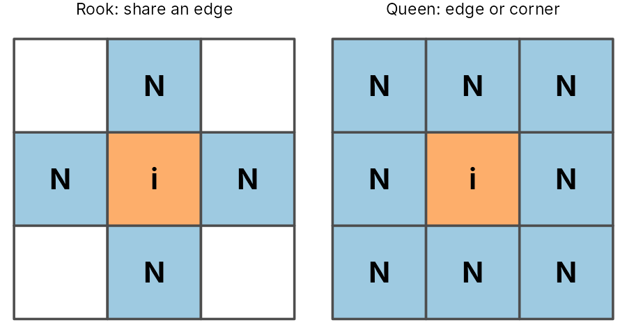
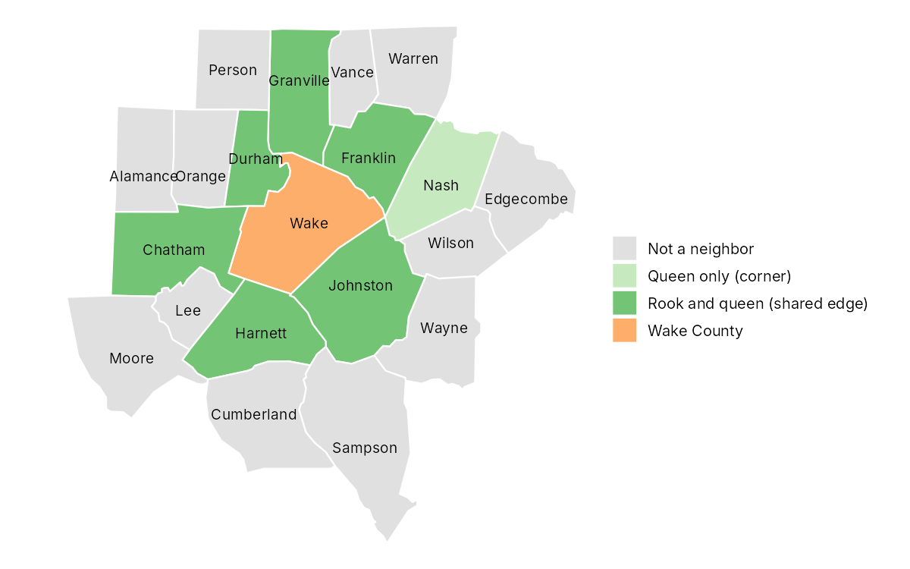

21 Distance and Neighborhoods
By the end of this chapter you should be able to:
- Tell physical from social distance, and explain distance decay.
- Calculate Euclidean, Manhattan, and great circle distances, and say when to use network distance or travel time instead.
- Explain why spatial statistics need a definition of neighbors.
- Define neighbors by a distance band, by inverse distance, by the k nearest features, and by rook or queen contiguity.
- Read a neighborhood weight matrix, and row-standardize it.
- Build neighbor lists and spatial weights in R with spdep.
How far is Chapel Hill from Charlotte? About 179 km in a straight line, but more like 230 km by road, and two and a half hours by car, longer at rush hour. Which answer is right depends on your question.
This chapter has two parts. The first is about distance: what it means, why it matters, and the main ways to measure it. The second uses distance, and shared borders, to decide which features are neighbors, and stores those relationships in a neighborhood weight matrix. That matrix is the input to nearly every spatial statistic in the rest of this book, starting with spatial autocorrelation in Chapter 22.
21.1 Distance is a fundamental geographic concept
Distance shapes the relationships and interactions among people, things, and places: where you shop, who you know, which clinic you can reach. Geographers work with two ideas of distance:
- Physical distance is the separation measured across the Earth’s surface, in meters, kilometers, or miles.
- Social distance is separation measured by connection, similarity, or interaction: how connected or isolated people and groups are. It shapes social networks, who interacts with whom, and how information or disease moves through a population.
The two often work together. Residential segregation is the classic case: two neighborhoods can sit side by side on a map yet be far apart socially.
21.1.1 Distance decay
Distance decay is one of the central regularities in geography: interaction between places, actual or potential, decreases as the distance between them increases. Distance has “friction”. Overcoming it costs time, money, or effort, so people choose closer options.
- Fewer customers visit a store the farther away they live.
- Migration between two cities shrinks as the distance between them grows.
- Clinic use drops as travel time rises.
Distance decay is often modeled as an inverse power of distance, such as 1/d or 1/d², or as an exponential function. Keep that idea in mind: we’ll use the same form for continuous neighbor weights later in the chapter.
21.1.2 Why measure distance?
We use distance in three ways:
- Explain it: why are some places farther from services than others?
- Measure it as an input to other calculations, such as accessibility scores or neighbor weights.
- Map it: distance surfaces, service areas, and isochrones, lines of equal travel time, such as the area within a 15-minute drive of a hospital.
In GIS, most work with distance falls into three operations:
| Operation | What it does | Example | In R |
|---|---|---|---|
| Spatial query | Selects features by distance | All schools within 1 km of a highway | sf::st_is_within_distance() |
| Buffer | Turns a distance into an area around a feature | A 500 m zone around each transit stop | sf::st_buffer() |
| Identify neighbors | Finds the features within each feature’s neighborhood | The census tracts that border each tract | spdep::poly2nb() |
The question you are asking decides which distance measure fits.
21.2 Measuring distance
21.2.1 Euclidean distance
Euclidean distance is straight-line distance, from the Pythagorean theorem. The differences in x and y between two points are the legs of a right triangle, and the distance is the hypotenuse:
\[ d = \sqrt{(x_2 - x_1)^2 + (y_2 - y_1)^2} \]
It is a simple calculation that doesn’t need a GIS, but it assumes a flat surface with the same units in x and y. That means projected coordinates. Never use it on latitude and longitude: a degree of longitude is about 111 km at the Equator but shrinks to nothing at the poles (Chapter 12).
Euclidean distance has three limitations:
- It assumes a flat Earth. The error grows with distance. Over hundreds of kilometers, use great circle distance.
- It assumes flat terrain. It underestimates the real separation in the mountains.
- It assumes no barriers. Rivers, fences, buildings, and missing roads all block straight-line travel. A driver can’t cross a lake just because it’s the shortest path.
The next measures each relax one of these assumptions.
21.2.2 Great circle distance
Great circle distance is the shortest distance between two points on a sphere, measured along its surface, like the route a long-haul flight takes. Use it for points stored in longitude and latitude, and always when points are far apart. With longitudes λ and latitudes φ, in radians:
\[ D = R \cdot \arccos\left[\sin\varphi_1 \sin\varphi_2 + \cos\varphi_1 \cos\varphi_2 \cos(\lambda_1 - \lambda_2)\right] \]
where R is the Earth’s radius, about 6,371 km on average. (The haversine formula gives the same answer and is more accurate for very short distances.)
Chapel Hill to Charlotte is about 179 km, and Chapel Hill to London about 6,252 km. You rarely need to write this yourself: sf::st_distance() computes great circle distances automatically when your data are in longitude and latitude, and Euclidean distances when they are projected.
21.2.3 Manhattan distance
Manhattan distance, or city-block distance, accounts for barriers by restricting travel to routes that run north-south and east-west, as on Manhattan’s grid of streets. Instead of cutting diagonally, it adds the horizontal and vertical differences:
\[ d = |x_2 - x_1| + |y_2 - y_1| \]
Manhattan distance is never shorter than the Euclidean distance between the same points. For a purely diagonal trip it is about 1.41 times longer (√2). It works poorly where streets don’t follow a grid.
21.2.4 Network distance and travel time
Network distance restricts travel to the lines, or arcs, of a network, such as streets, rail lines, or rivers. The route is a chain of arcs, and the distance is the sum of their lengths. Real networks add rules: one-way streets, turn restrictions, and speed limits. Esri’s Network Analyst and routing services calculate it, and so do R packages such as sfnetworks and dodgr.
Travel time goes one step further and measures separation in minutes instead of meters, which is closer to how people experience distance. It needs a network with speeds, or a travel-cost surface for off-road travel, and road speeds, turns, and traffic all matter. Calculating it for many origin-destination pairs can take a lot of computing. Most U.S. studies assume everyone travels by car, which overstates access for people who rely on transit or walking; better studies add other modes.
21.2.5 Straight lines or networks?
People usually move along networks, so true separation shouldn’t be measured as a straight line. But Euclidean and network distances are often highly correlated, and where they are, Euclidean distance is a reasonable and much cheaper stand-in. The correlation is weaker in rural areas, near water, and where networks are sparse. Before you choose, compute both for a sample of your data and check how closely they agree.
You want to measure each North Carolina county’s access to hospitals. Which distance measure would you use for a county in the Triangle? For a county on the Outer Banks, where the nearest hospital may be across a sound? Why?
21.3 Neighborhoods and neighbors
21.3.1 Comparing separation between features
There are two basic ways to say how far apart features are, and both become ways to define neighbors:
- Absolute distance: the actual distance separating them. Example: everything within 2 km.
- Relative distance: separation compared with other features. Examples: the nearest feature, the nearest k features, or features that touch (topology).
21.3.2 Why neighbors matter
The first law of geography says that near things are more related than distant things. Values at nearby locations tend to be similar, and similarity decreases with distance. This dependence is spatial autocorrelation. To measure it, we first have to say which locations are “near”: we need neighbors.
A neighborhood, in spatial analysis, is the zone of influence around a feature: an idea of nearness (things close to one another) or of connectedness (things that affect one another). Neighbors are the features inside a feature’s neighborhood.
Three details matter:
- Every observation gets its own set of neighbors.
- Neighbors need not be symmetric. With nearest neighbors, A can be B’s neighbor without B being A’s, if B has another feature even closer.
- Some observations may have no neighbors at all. An island county, or an isolated point, needs special handling. In spdep, set
zero.policy = TRUE.
Nearly every spatial method needs a neighbor definition: global spatial autocorrelation (Moran’s I, Geary’s C), local indicators (local Moran’s I, Getis-Ord Gi*), spatial regression (spatial lag and spatial error models), and spatial smoothing and interpolation. In every case, the neighbor definition is a choice you make, and different definitions give different neighbors and different results.
21.3.3 Binary or continuous neighbors
There are two ways to record a neighbor relationship:
- Binary (yes or no): a feature either is a neighbor or isn’t, stored as 1 or 0. Binary weights are simpler to interpret and are the default in most software.
- Continuous: an amount of “neighborliness”, usually based on distance, so closer features get larger weights. Some neighbors are strong and others weak. Continuous weights are distance decay applied to neighbors.
21.4 Three ways to define neighbors
| Approach | Neighbors are | In spdep |
|---|---|---|
| Absolute distance | Features within a set distance | dnearneigh() |
| Relative distance: nearest features | The nearest one, or the nearest k | knearneigh() and knn2nb() |
| Relative distance: topology | Polygons that share a border | poly2nb(), with queen = TRUE or FALSE |
21.4.1 Distance band neighbors
With a distance band, features are neighbors if they fall within a chosen threshold distance. For points, measure between the points. For polygons, measure between their centroids, which can mislead: two large rural counties may share a long border yet have centroids far apart.
The threshold is the key decision:
- Too small, and many features have no neighbors.
- Too large, and almost everything is a neighbor.
- A common start is the smallest distance that gives every feature at least one neighbor, which is the largest of the nearest-neighbor distances.
The top row of Figure 21.1 shows a distance band on 19 points that are dense near the center and sparse at the edges. With d = 8, the central point has four neighbors. The same d gives a point near the edge none. This is the edge effect: features at the boundary of a study area, or in sparse areas, get few or no neighbors, partly because we can’t see past the edge of our data. For these 19 points, every point has at least one neighbor only once d reaches about 20.
![Four panels of the same 19 white points, most clustered near the middle and a few scattered toward the edges. Top left: a small shaded circle around a red point near the center contains four blue neighbor points. Top right: the same-sized circle around a red point near the bottom edge contains no other points. Bottom left: arrows run from the central red point to its four nearest points, all very close. Bottom right: arrows run from the bottom-edge red point to its four nearest points, three of them far up in the central cluster and one off to the right.](../images/neighbors/points-band-knn.png)
21.4.2 Inverse distance weights
Distance band neighbors can also be continuous. Each neighbor inside the band gets a weight from an inverse function of distance:
\[ w_{ij} = \frac{1}{d_{ij}^{\,x}} \]
where wij is the weight from observation i to observation j, dij is the distance between them, and x is the distance-decay parameter: larger values make weights fall off faster. 1 or 2 is common. Features beyond the threshold get a weight of 0.
Inverse distance weights grow very large as distance approaches 0, so check for duplicate or nearly identical points.
21.4.3 k nearest neighbors
The nearest-neighbor approach ignores the actual distance and keeps the k closest features. For polygons, it uses their centroids.
- Every feature gets exactly k neighbors, so no one is left out.
- It adapts to density. Neighbors are close in dense areas and far apart in sparse ones (bottom row of Figure 21.1).
- Relationships are not always symmetric. My nearest neighbor may have someone else even closer. spdep’s
make.sym.nb()forces symmetry if a method requires it.
A distance band gives a constant distance and a variable number of neighbors. k nearest neighbors gives a constant number and a variable distance. Choosing k is a trade-off: a small k keeps local detail, while a larger k gives more stable averages but pulls in less related features. Try a few values of k and check whether your conclusions change.
21.4.4 Contiguity: rook and queen
Topology-based neighbors ignore distance altogether and ask whether two polygons touch. Points can’t share a border, so this only works for polygons. (If you need contiguity for points, first build Thiessen or Voronoi polygons around them: each polygon holds the area closer to its point than to any other.) There are two common rules, named after how the chess pieces move (Figure 21.2):
- Rook contiguity: polygons must share an edge, a boundary segment of some length. On a grid, each cell has four rook neighbors.
- Queen contiguity: a shared edge or a single shared corner is enough. On a grid, each cell has eight queen neighbors.

Every rook neighbor is also a queen neighbor, so the queen set is always the same size or larger. On irregular real boundaries, such as counties, the two sets are often almost the same (Figure 21.3). The neighbors of the neighbors are called second-order neighbors.

In the nc county boundaries, 14 pairs of counties touch only at a corner, so the queen rule gives 490 neighbor links and the rook rule 462.
21.5 The neighborhood weight matrix
However you define neighbors, the result is stored the same way: a neighborhood weight matrix, usually called W. It is a table with n rows and n columns, where n is the number of observations. Entry wij, in row i and column j, describes the relationship between observation i and observation j. The diagonal is 0, because no observation is its own neighbor.
Here are four census tracts in a row, A | B | C | D, so each touches only the tracts beside it. With binary rook contiguity:
Read across a row to find a tract’s neighbors: B’s row has 1s under A and C.
21.5.1 Row standardization
Weights are often row-standardized: each weight is divided by its row’s total, so every row sums to 1. B’s two neighbors then get 0.5 each, and the edge tracts’ single neighbors get 1. In spdep this is style = "W".
Why bother? Multiplying a row-standardized matrix by a variable gives each observation the average of its neighbors’ values. That neighborhood average is called the spatial lag:
B’s neighbors, A and C, average (10 + 30) ÷ 2 = 20. Moran’s I (Chapter 22) compares each value with exactly this kind of neighborhood average.
21.5.2 Building neighbors and weights in R
In spdep, neighbors are stored as a neighbor list (class nb), a compact version of W that lists only each observation’s neighbors. nb2listw() turns any neighbor list into weights. Assuming library(sf), library(spdep), and an sf polygon layer named tracts in a projected coordinate system:
# Contiguity neighbors (queen is the default)
nb_queen <- poly2nb(tracts, queen = TRUE)
nb_rook <- poly2nb(tracts, queen = FALSE)
# k nearest neighbors, using tract centroids
coords <- st_coordinates(st_centroid(tracts))
nb_knn <- knn2nb(knearneigh(coords, k = 4))
# Distance band: 0 to 5 km (in the CRS's units, meters)
nb_dist <- dnearneigh(coords, d1 = 0, d2 = 5000)
# Row-standardized spatial weights
lw <- nb2listw(nb_queen, style = "W", zero.policy = TRUE)
# Inverse distance weights (x = 1) on the distance band
idw <- lapply(nbdists(nb_dist, coords), function(d) 1 / d)
lw_idw <- nb2listw(nb_dist, glist = idw, style = "B", zero.policy = TRUE)dnearneigh() measures in the units of your coordinate reference system, so project first. summary(nb_queen) reports how many neighbors each observation has, and warns about any with none.
21.6 Check your understanding
Interaction between places decreasing as the distance between them increases is called:
What is the Manhattan distance from (1, 2) to (4, 6)?
Euclidean distance is fine to calculate directly on latitude and longitude.
With k nearest neighbors, every feature gets exactly k neighbors.
Two counties that touch only at a single corner are neighbors under which rule?
With inverse distance weights and x = 2, a neighbor twice as far away gets what share of the weight?
In a row-standardized weight matrix, each row sums to:
Which spdep function builds contiguity neighbors from polygons?
21.7 Summary
- Physical distance is measured across the Earth’s surface; social distance by connection and similarity. Distance decay says interaction falls as distance grows.
- Euclidean distance is the straight line; use it only on projected coordinates. Great circle distance follows the curved Earth and suits longitude and latitude. Manhattan distance follows a street grid. Network distance and travel time follow real routes.
- The first law of geography is why neighbors matter: to measure spatial autocorrelation, we must first say who is near whom.
- Neighbors can be defined by a distance band (absolute distance), by the k nearest neighbors, or by contiguity: rook (a shared edge) or queen (an edge or a corner). Weights can be binary or continuous, such as inverse distance.
- Distance bands give a constant distance and a variable count, and leave edge features short. k nearest neighbors gives a constant count and a variable distance, and can be asymmetric.
- Neighbor relationships are stored in a weight matrix, W. Row-standardized weights sum to 1 across each row, so W times a variable gives the spatial lag: each observation’s neighborhood average.
- In spdep:
poly2nb(),knearneigh()withknn2nb(), anddnearneigh()build neighbors;nb2listw()turns them into weights. Each choice gives a different weight matrix, and can give different results, so justify yours and try more than one.
21.8 Exercises
- By hand. For the points (2, 3) and (8, 11), calculate the Euclidean and the Manhattan distance, then check both with the functions in this chapter.
- Great circles. Find the longitude and latitude of your hometown and calculate its great circle distance from Chapel Hill. Then compare it with the driving distance from an online map. How much longer is the drive, in percent?
- Wrong on purpose. Calculate the “Euclidean distance” from Chapel Hill to Charlotte using their longitudes and latitudes as if they were x and y. What units is the answer in, and why is it meaningless?
- Your county. Using the sf package’s
ncdata, build queen and rook neighbors withpoly2nb(). How many neighbors does your home county (or Orange County) have under each rule? Which county has the most neighbors? - Three definitions. Project
ncwithst_transform(32119), find the county centroids, and build neighbors with k = 4 and with a distance band of 50 km. Comparesummary()of each. Which counties have no neighbors within 50 km? What is the smallest distance band that gives every county at least one neighbor? - Spatial lag. Make row-standardized queen weights for
nc, and calculate the spatial lag of births per square kilometer withlag.listw(). Make a scatterplot of each county’s value against its spatial lag. What does the pattern suggest?
21.9 Further reading
- Spatial Data Science: With Applications in R, by Edzer Pebesma and Roger Bivand (CRC Press, 2023), free at https://r-spatial.org/book/. Chapter 14, “Proximity and Areal Data”, covers neighbor lists and spatial weights in spdep.
- Geographic Information Analysis (2nd ed.), by David O’Sullivan and David Unwin (Wiley, 2010). Chapter 2 discusses distance, adjacency, interaction, and neighborhoods.
- Tobler, W. R. (1970). “A Computer Movie Simulating Urban Growth in the Detroit Region.” Economic Geography 46: 234–240. The source of the first law of geography.
dnearneigh() in spdep.
One spatial object in a layer of data, such as one tree, one sidewalk
segment, or one building. In an sf object, each row is a feature.
Polygons are neighbors if they share an edge or just a corner. On a
grid, each cell has eight. spdep’s default.
An n × n table, W, whose entry
wij records the neighbor relationship
between observations i and j.
Dividing each weight by its row’s total so every row sums to 1. Then
W times a variable gives the neighbors’ average.
spdep’s compact way of storing neighbors (class nb): each
observation’s neighbors, without all the zeros of a matrix.
The tendency for things that are close together to be more alike than
things that are far apart, such as neighboring counties having similar
incomes.
Separation measured across the Earth’s surface, in meters, kilometers,
or miles.
The zone of influence around a feature. Features inside it are its
neighbors, defined by a distance, the nearest features, or shared
borders.
Code that takes inputs (arguments), does a job, and returns an output,
such as mean(temps).
A line, or area, of equal travel time from a place, such as everywhere
within a 15-minute drive of a hospital.
A small area of about 1,200 to 8,000 people (4,000 on average), drawn to
be fairly stable over time. The workhorse unit for neighborhood
analysis.
Straight-line distance, from the Pythagorean theorem. Use it only with
projected coordinates.
A method for flattening the curved graticule onto a flat map. Every
projection distorts shape, area, distance, or direction.
The angle north or south of the Equator, from 0° to 90°. Lines of equal
latitude are parallels.
The angle east or west of the Prime Meridian, from 0° to 180°. Lines of
equal longitude are meridians.
The circle halfway between the North and South Poles: 0° latitude.
A formula for great circle distance that stays accurate for very short
distances.
Distance along a grid of streets: the horizontal plus the vertical
difference, never shorter than the straight line.
A bundle of code, written by other users, that adds new functions to R.
Install it once with install.packages(), then load it in
each session with library().
A subset of a population that is surveyed to estimate something about
the whole population. Smaller samples give less certain estimates.
How features connect, such as which polygons touch, regardless of the
distances between them.
Waldo Tobler’s statement that “everything is related to everything else,
but near things are more related than distant things.” It is the idea
behind spatial autocorrelation.
One thing that was measured or recorded, such as a student, a county, or
a flight. In a data frame, each row is an observation.
A neighbor definition: each feature’s neighbors are the k
features closest to it. Every feature gets exactly k.
A global measure of spatial autocorrelation, from −1 (dispersed) through
0 (random) to +1 (clustered), with a p-value.
Moran’s I calculated for each observation, to find clusters and
outliers. localmoran() in spdep.
A local statistic that gives each observation a z-score: large positive
for hot spots, large negative for cold spots.
A statistical model of how one variable (such as home price) changes
with one or more others (such as distance to downtown).
The weighted average of an observation’s neighbors’ values, calculated
with row-standardized weights. lag.listw() in spdep.
A spatial regression model that allows the errors of neighboring
observations to be correlated.
Neighbor weights of 1 for a neighbor and 0 for everything else.
Neighbor weights that vary, usually falling with distance, so closer
neighbors count more.
A closed shape that represents an area, such as a county, a lake, or a
census tract.
The geometric center of a polygon. st_centroid() in R.
Features near the edge of a study area get too few neighbors because the
data stop at the boundary.
The power x in inverse distance weights, 1 /
d^x. Larger values make weights fall off faster.
Neighbor weights of 1 / d^x, so a neighbor’s weight
falls as its distance grows.
In R, a named piece of memory that holds data, such as
months <- 12. In a dataset, a measured characteristic,
such as median income; each Census variable has a code.
Sharing a border. Contiguity neighbors are polygons that touch, by the
rook or queen rule.
Polygons drawn around a set of points so each holds the area closer to
its point than to any other.
Polygons are neighbors only if they share an edge. On a grid, each cell
has four.
The neighbors of a feature’s neighbors.
“Simple features”: the R package for spatial vector data. An sf object
is a data frame with a geometry column holding each row’s point, line,
or polygon.
The rules that tie coordinates to places on the Earth, including how the
round Earth is flattened onto a map (the projection). Layers must share
a coordinate system before you can combine them.
The use of data that have a location attached to answer questions about
the world. It combines what we study (the spatial), how we
handle it (data skills), and how we ask and answer questions
(science).